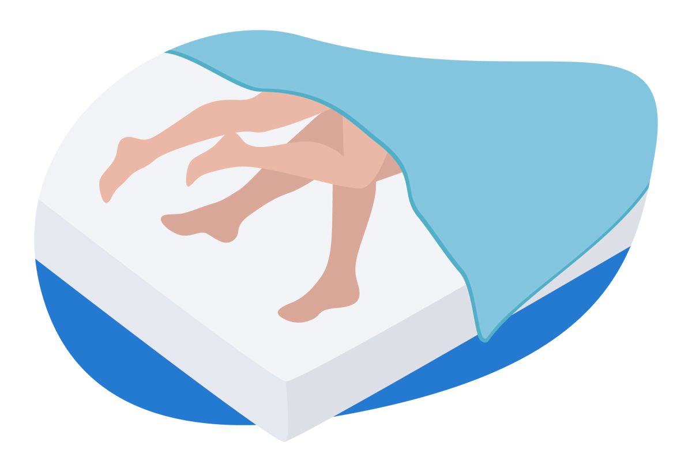

Критерии качественного сна
- Сон до 23.00
- Непрерывный ночной сон.
- Сон в полной темноте и тишине.
- Период засыпания 15-20 минут.
- Самостоятельное пробуждение утром.
- Появление чувства бодрости после просыпания в течении 20 минут
- Хорошее самочувствие днем и отсутствие сонливости.
Норма длительности сна - от 6 до 10 часов непрерывного сна в сутки.
- Проводите на улице в светлое время суток не менее 2-х часов, оптимально 3-4 часа (подготовка к выработке мелатонина начинается с утренней инсоляции). Если не получается, используйте в помещении лампы дневного света.
- Не используйте гаджеты или блокируйте синий свет на экранах и гаджетах с помощью приложений или специальных очков, выключайте белый свет, оставляя только желтый или красный.
- Используйте блекаут-шторы или маску для сна для затемнения, убирайте источники света в комнате (заклейте светодиодные лампочки на выключателях).
- Работайте над снижением уровня хронического стресса
- Выстройте режим питания в соответствии с циркадными ритмами, не ешьте за 4 часа до сна, ужин должен быть легким, чтобы организм не тратил энергию на переваривание пищи и был сконцентрирован на восстановлении. Если есть симптомы хронической усталости надпочечников, добавьте на ужин немного сложных углеводов, чтобы избежать гипогликемии. Используйте продукты питания и нутрицевтики для производства мелатонина (триптофан, магний, витамины В6,B3
- Подберите подходящую физическую нагрузку для себя
- Не пейте крепкий чай и кофеин за 6 часов до сна
- Добавьте ферментированные продукты в рацион (при нарушении микробиоты кишечника, “полезные” бактерии не синтезируют важные витамины группы В, которые участвуют в синтезе мелатонина).
- Аппликатор для расслабления -Виды аппликаторов: Ляпко; Кузнецова; Пранамат. При выборе аппликатора, обратите внимание на наконечники, они должны быть двойными и не острыми. Среди аппликаторов Кузнецова, подходящими являются зеленые иглы. Остальные, более острые, будут тонизировать. Приобрести можно в магазинах медицинской техники и интернет-магазинах.
Рекомендации для здорового сна
Нутрицевтики для коррекции сна
- Тулси (базилик священный) в 2 приема - 2 капсулы на 3-4 часа до сна, 2 капсулы за 1 час до сна. Снижает высокий кортизол вечером. Подходит при гипертонии, остром стрессе
- Ашваганда 1-2 капсулы 1-2 раза в день до еды, или через час после еды. Адаптоген, снижает уровень стресса, поддерживает работу надпочечников, помогает нормализовать сон.
- Пустырник 1-2 таблетки за 1 час до сна. Не подходит для дневного приема, может вызвать избыточную сонливость. Успокаивающее действие, снимает нервозность и раздражительность
- Валериана Заваривать в виде чая, в вечернее время. Снижает давление, нормализует высокий кортизол, успокаивает нервную систему, облегчает процесс засыпания.
- Мелисса с пассифлорой Заваривать в виде чая. 2-3 чашки в конце дня. Снимает острый стресс, спазм сосудов, успокаивает нервную систему и нормализует сон
ДЕФИЦИТ ВИТАМИНА Д – основной фактор бессонницы
- Магний 400 - 500 мг/сут - снимает повышенную возбудимость, облегчает засыпание. Увеличивает продолжительность медленной фазы сна, стимулирует активность фермента участвующего в цепочке превращений серотонин-мелатонин
- Витамин В6 50 - 100 мг/сут участвует в обмене триптофана, регулирует процесс перехода серотонина в мелатонин
- Триптофан 500 - 1500 мг/сут аминокислота из которой синтезируется мелатонин
- Витамин В3 (ниацин) 400 - 800 мг/сут В3 и мелатонин имеют общего предшественника - триптофана. При дефиците В3 будет страдать синтез мелатонина
Нутрицевтики для синтеза мелатонина
